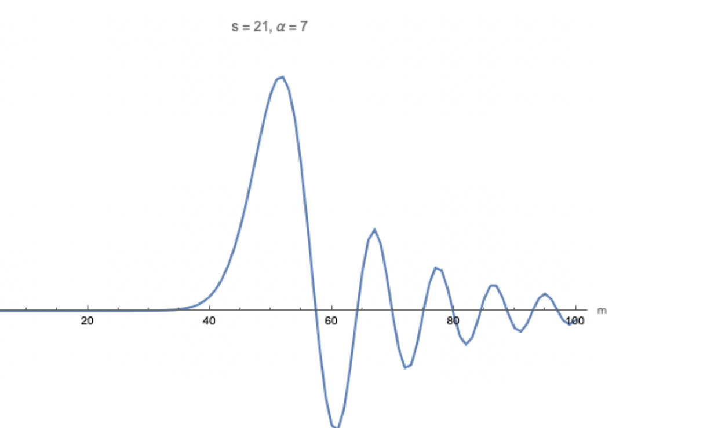

Estados Apachurrados
1. Motivación física
Los estados apachurrados, o squeezed states, aparecen cuando se cambia la anchura de las fluctuaciones cuánticas de un oscilador. En un estado coherente las incertidumbres de posición y momento son iguales, y el producto toma el valor mínimo permitido, $\hbar/2$. En un estado apachurrado el producto sigue siendo mínimo, pero las incertidumbres se redistribuyen: una cuadratura se vuelve más precisa y la otra más ruidosa.
Una forma física de generar este estado es cambiar repentinamente la frecuencia del oscilador. Si el potencial se modifica de golpe, el estado que antes era el vacío deja de ser el vacío del nuevo oscilador. Visto desde el oscilador original, ese estado tiene una gaussiana con anchura distinta: está apachurrado.
Se usa un parámetro real positivo $s>0$. Para $s=1$ no hay apachurramiento. Para $s>1$ se reduce la fluctuación en posición y aumenta la fluctuación en momento. Para $s<1$ ocurre lo contrario.
2. Estado base y cambio repentino de frecuencia
La función de onda del estado base del oscilador armónico es
$$u_0(x)=\left(\frac{K^2}{\pi}\right)^{1/4}e^{-K^2x^2/2},\qquad K=\sqrt{\frac{M\Omega}{\hbar}}.$$Si la frecuencia cambia repentinamente como
$$\Omega\longrightarrow \frac{\Omega}{s},$$el nuevo parámetro de anchura es
$$K'=\sqrt{\frac{M(\Omega/s)}{\hbar}}=\frac{K}{\sqrt{s}}.$$Como $K^2=sK'^2$, el estado base original se puede escribir en términos de $K'$ como
$$u_0(x)=\left(\frac{sK'^2}{\pi}\right)^{1/4}e^{-sK'^2x^2/2}.$$Sólo para $s=1$ coincide con el estado base del nuevo potencial. Para $s\neq1$ es una gaussiana con anchura distinta. Esta es la primera manera de entender el apachurramiento.
3. Operador de apachurramiento
De manera equivalente, se puede dejar fijo el potencial y transformar el estado. Se define
El factor $s^{1/4}$ preserva la normalización. En efecto,
$$\int |\hat S(s)\psi(x)|^2\,dx =\int s^{1/2}|\psi(\sqrt{s}\,x)|^2\,dx.$$Con $u=\sqrt{s}\,x$, $dx=du/\sqrt{s}$, y por tanto
$$\int |\hat S(s)\psi(x)|^2\,dx=\int |\psi(u)|^2\,du.$$Aplicando $\hat S(s)$ al vacío:
$$\hat S(s)u_0(x)=s^{1/4}\left(\frac{K^2}{\pi}\right)^{1/4} e^{-K^2(\sqrt{s}x)^2/2} =\left(\frac{sK^2}{\pi}\right)^{1/4}e^{-sK^2x^2/2}.$$Para $s>1$ la campana se estrecha; para $s<1$ se ensancha.
4. Incertidumbres del vacío apachurrado
La densidad del vacío original es
$$|u_0(x)|^2=\left(\frac{K^2}{\pi}\right)^{1/2}e^{-K^2x^2}.$$Al compararla con una gaussiana normal, se obtiene
$$\sigma_x^{(0)}=\frac{1}{\sqrt2\,K}.$$Para el estado apachurrado,
$$|\psi_s(x)|^2=\left(\frac{sK^2}{\pi}\right)^{1/2}e^{-sK^2x^2},$$La transformada de Fourier de esta gaussiana da
$$\psi_s(p)=\left(\frac{1}{\pi\hbar^2sK^2}\right)^{1/4} e^{-p^2/(2\hbar^2sK^2)},$$de modo que
El producto es
$$\sigma_x\sigma_p= \frac{1}{\sqrt{2s}K}\sqrt{\frac{s}{2}}\hbar K=\frac{\hbar}{2}.$$Así, el estado sigue saturando Heisenberg, pero la incertidumbre ya no está repartida simétricamente.
5. Función de Wigner del vacío apachurrado
Se usa la definición
$$W(x,p)=\frac{1}{\pi\hbar}\int_{-\infty}^{\infty} \psi(x+y)\psi^*(x-y)e^{2ipy/\hbar}\,dy.$$Para el vacío apachurrado la función de onda es real:
$$\psi_s(x)=\left(\frac{sK^2}{\pi}\right)^{1/4}e^{-sK^2x^2/2}.$$Sustituyendo,
$$W_s(x,p)=\frac{1}{\pi\hbar}\left(\frac{sK^2}{\pi}\right)^{1/2} \int e^{-\frac{sK^2}{2}(x+y)^2}e^{-\frac{sK^2}{2}(x-y)^2} e^{2ipy/\hbar}\,dy.$$Como
$$(x+y)^2+(x-y)^2=2x^2+2y^2,$$queda
$$W_s(x,p)=\frac{1}{\pi\hbar}\left(\frac{sK^2}{\pi}\right)^{1/2} e^{-sK^2x^2}\int e^{-sK^2y^2+2ipy/\hbar}\,dy.$$La integral gaussiana $\int e^{-ay^2+by}\,dy=\sqrt{\pi/a}\,e^{b^2/(4a)}$ con $a=sK^2$ y $b=2ip/\hbar$ da
$$\int e^{-sK^2y^2+2ipy/\hbar}\,dy =\sqrt{\frac{\pi}{sK^2}}e^{-p^2/(\hbar^2sK^2)}.$$La gaussiana circular del vacío coherente se convierte en una elipse. Se estrecha en una dirección y se alarga en la otra, manteniendo fija el área mínima.
6. Estado coherente apachurrado
En el manuscrito se toma $\alpha\in\mathbb R$, de modo que el desplazamiento es sólo en posición. El estado se define como
$$\ket{\psi_s(\alpha)}=\hat D(\alpha)\hat S(s)\ket0.$$En posición,
El centro de la gaussiana es
$$x_0=\frac{\sqrt2\alpha}{K}.$$Su función de Wigner se obtiene desplazando la elipse:
Si $\alpha=\alpha_R+i\alpha_I$, el centro también se desplaza en momento:
$$W_{\alpha,s}(x,p)=\frac{1}{\pi\hbar} \exp\left[-s(Kx-\sqrt2\alpha_R)^2-\frac{1}{s} \left(\frac{p}{\hbar K}-\sqrt2\alpha_I\right)^2\right].$$7. El orden de desplazar y apachurrar no conmuta
Si primero se apachurra y luego se desplaza,
$$\hat D(\alpha)\hat S(s)u_0(x) =\left(\frac{sK^2}{\pi}\right)^{1/4} e^{-\frac{s}{2}(Kx-\sqrt2\alpha)^2}.$$En cambio, si primero se desplaza y luego se apachurra,
$$\hat S(s)\hat D(\alpha)u_0(x) =\left(\frac{sK^2}{\pi}\right)^{1/4} e^{-\frac12(\sqrt{s}Kx-\sqrt2\alpha)^2}.$$Reescribiendo el exponente,
$$\hat S(s)\hat D(\alpha)u_0(x) =\left(\frac{sK^2}{\pi}\right)^{1/4} e^{-\frac{s}{2}\left(Kx-\sqrt{\frac{2}{s}}\alpha\right)^2}.$$Apachurrar después de desplazar también escala el desplazamiento efectivo. Por eso el orden de operaciones produce estados distintos.
8. Amplitud en la base de energía
El estado apachurrado desplazado no es eigenestado del oscilador original. Para conocer su distribución de energía se calcula
$$W_m=|w_m|^2,\qquad w_m=\braket{m|\psi_s}=\int_{-\infty}^{\infty}u_m(x)\psi_s(x)\,dx.$$Con
$$u_m(x)=\frac{K^{1/2}}{\pi^{1/4}\sqrt{2^m m!}}\, H_m(Kx)e^{-(Kx)^2/2},$$se obtiene
$$w_m=\frac{s^{1/4}}{\sqrt{\pi}\sqrt{2^m m!}} \int_{-\infty}^{\infty}H_m(\xi) \exp\left[-\frac12\xi^2-\frac{s}{2}(\xi-\sqrt2\alpha)^2\right]d\xi,$$donde $\xi=Kx$. Se completa el cuadrado:
$$\frac12[\xi^2+s(\xi-\sqrt2\alpha)^2] = \left[\left(\frac{s+1}{2}\right)^{1/2}\xi -s(s+1)^{-1/2}\alpha\right]^2 +\frac{s}{s+1}\alpha^2.$$Definiendo
$$y=\left(\frac{s+1}{2}\right)^{1/2}\xi,\qquad y_0=s(s+1)^{-1/2}\alpha,$$la integral se reduce a la forma
$$\int e^{-(y-y_0)^2}H_m(\lambda y)\,dy,$$con
$$\lambda=\left(\frac{s+1}{2}\right)^{-1/2},\qquad 1-\lambda^2=\frac{s-1}{s+1}.$$Usando la identidad generada por los polinomios de Hermite,
$$\int e^{-(y-y_0)^2}H_m(\lambda y)\,dy =\sqrt{\pi}(1-\lambda^2)^{m/2} H_m\left(\frac{\lambda y_0}{\sqrt{1-\lambda^2}}\right),$$se obtiene
9. Distribución de energía y límite coherente
Como $\alpha$ y $s$ son reales en esta derivación,
Cuando $s\to1$, el argumento del polinomio de Hermite tiende a infinito. Se usa la aproximación de argumento grande
$$H_m(y)\sim (2y)^m.$$Al sustituirla, los factores singulares se cancelan y se recupera
Es decir, el estado apachurrado se reduce al estado coherente y la distribución de energía se vuelve poissoniana.
10. Puntos clásicos de retorno y oscilaciones
Para $s\gg1$, la función de onda apachurrada en posición se vuelve muy estrecha y se aproxima a una delta centrada en
$$X=\frac{\sqrt2\alpha}{K}.$$Entonces
$$w_m(\psi_s)\approx N\,u_m\left(X=\frac{\sqrt2\alpha}{K}\right) \propto H_m(\sqrt2\alpha)e^{-\alpha^2}.$$La estructura de $W_m$ se entiende comparando este punto con los puntos clásicos de retorno del oscilador. Como
$$V(x)=\frac12m\omega^2x^2,\qquad E_m=\hbar\omega\left(m+\frac12\right),$$los puntos de retorno satisfacen
$$\frac12m\omega^2X_t^2=\hbar\omega\left(m+\frac12\right).$$Por tanto
La región permitida es $|X|
Así:

La Wigner inicial, para $\alpha\in\mathbb R$, es
Para el hamiltoniano armónico,
las ecuaciones de Hamilton son
Por tanto $\ddot x=-\omega^2x$ y
Como $m\omega=\hbar K^2$,
Invirtiendo esta rotación,
La Wigner evoluciona por composición con el flujo clásico,
$W(x,p,t)=W(x_0,p_0,0)$. Sustituyendo:
La elipse de Wigner rota rígidamente en el espacio fase con frecuencia
$\omega$. Su área no cambia, pero la dirección apachurrada sí: en ciertos
tiempos el ruido reducido está principalmente en posición, y en otros en
momento.
11. Evolución temporal de la función de Wigner
Los estados apachurrados son una herramienta central de metrología
cuántica. Reducen el ruido en la cuadratura que se desea medir y aumentan
el ruido en la conjugada, sin violar Heisenberg. Esta idea aparece en
interferometría, mediciones cuánticas no destructivas y detectores como
LIGO.